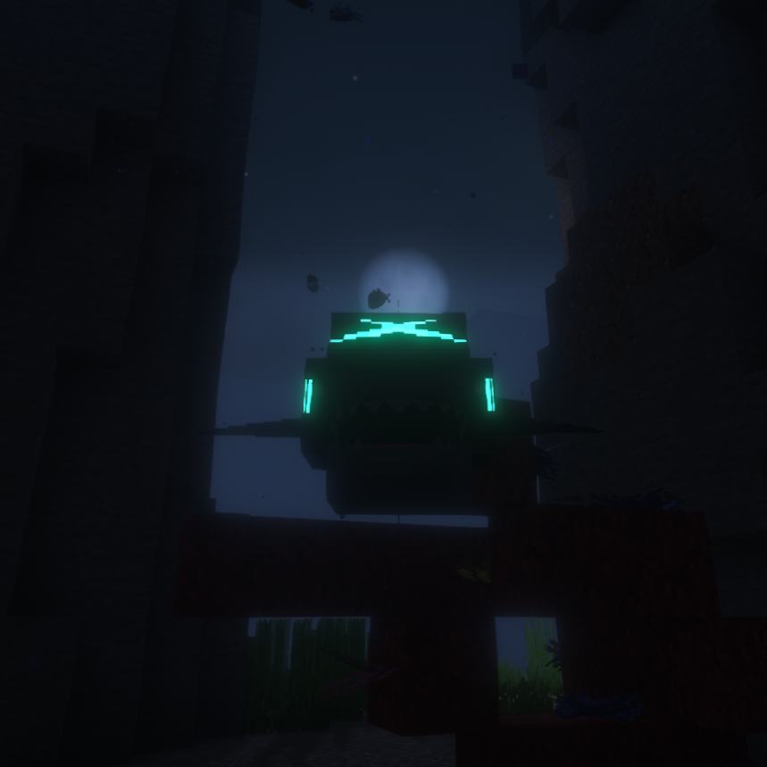
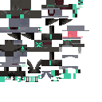
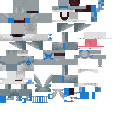

Abyssal Form
Abyssal Sharpedo
WaterGhost
BST 480

In-game screenshot
Base Stats
HP100
Attack130
Defense90
Sp. Atk45
Sp. Def80
Speed35
Ability
Bottom Feeder
This Pokémon restores a small amount of HP when its biting moves hit.
Signature Move
Gravejaw
| Type | Category | Power | Accuracy | PP |
|---|---|---|---|---|
| Ghost | Physical | 80 | 100% | 10 |
Biting move. 30% chance to lower the target's Defense by 1 stage.
Level-Up Learnset
| Level | Move |
|---|---|
| 1 | Leer |
| 1 | Water Gun |
| 1 | Astonish |
| 1 | Bite |
| 8 | Scary Face |
| 16 | Aqua Jet |
| 20 | Ice Fang |
| 24 | Shadow Sneak |
| 30 | Aqua Cutter |
| 36 | Crunch |
| 42 | Gravejaw |
| 48 | Dive |
| 54 | Liquidation |
| 60 | Jaw Lock |
| 68 | Phantom Force |
| 74 | Poltergeist |
| 80 | Wave Crash |
Additional Learnset
Other Learnset Categories
No additional Egg, TM, Tutor, or Legacy move entries are defined for this form in pack 1.10.
Natural Spawn
Rarity: Ultra Rare
Weight: 0.15
Level: 40-65
Context: Submerged
Biomes: Deep Ocean
Maximum Y: 40
Minimum depth: 12
Textures

Normal texture sheet
Shiny texture sheet